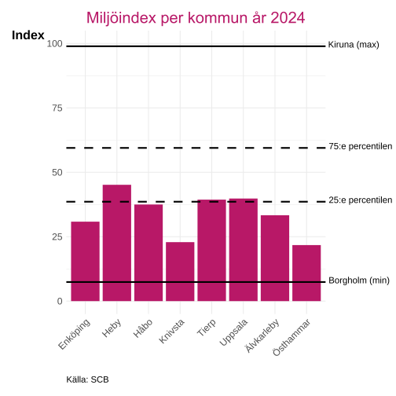
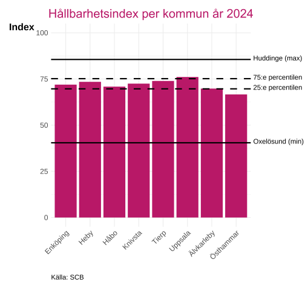

Miljö
Inledning
Denna rapport redovisar miljötillståndet i Uppsala län och bygger på Länsstyrelsens regionala uppföljning. Syftet är att ge en samlad bild av länets miljökvalitet, naturresurser och hållbarhetsarbete på kommunnivå, samt att följa upp utvecklingen mot nationella miljökvalitetsmål.
Alla interaktiva grafer kan laddas ned genom att trycka på  . Då sparas just den bild som visas, med exempelvis den valda regionen. Genom att dubbelklicka på kommunnamn i grafens legend så zoomas den kommunen in för en mer detaljerad vy(flera kan väljas samtidigt).
. Då sparas just den bild som visas, med exempelvis den valda regionen. Genom att dubbelklicka på kommunnamn i grafens legend så zoomas den kommunen in för en mer detaljerad vy(flera kan väljas samtidigt).
Länsstyrelsens uppföljning av kvalitetsmiljömål
I detta avsnitt redovisas information, data och sammanfattningar från Länsstyrelsens regionala årliga uppföljning för Uppsala län 2024 Regional Utveckling och Samverkan (RUS) (2024). För varje miljökvalitetsmål görs en bedömning av om målet bedöms kunna nås till år 2030 samt vilken trend utvecklingen har. Bedömningarna används som underlag för prioritering av åtgärder och för att följa länets bidrag till de nationella miljömålen.
Tabellen nedan återger länsstyrelsens bedömningar exakt så som de presenteras i den ursprungliga rapporten.
| Länsstyrelsens regionala årliga uppföljning av miljökvalitetsmål | |||
|---|---|---|---|
| År 2025 | |||
| Miljömål | Målbedömning | Trend | Beskrivning |
| Begränsad klimatpåverkan | Ingen regional bedömning | Ingen regional bedömning | De klimatpåverkande utsläppen har minskat i länet sedan 1990, framför allt beroende på minskad andel fossil uppvärmning. De största klimatpåverkande utsläppen i länet kommer från transport- respektive jordbrukssektorn. Personbilism fortsätter att dominera transportutsläppen. Länets klimatarbete fokuserar på att skapa förutsättningar för fossilfri transport- och energiomställning samt effektivisering. |
| Frisk luft | Nära | Neutral 🡆 | För att nå och hålla målet behöver ytterligare åtgärder vidtas, främst för att minska utsläppen från vägtrafik, som är den största källan till utsläpp av partiklar och kväveoxider i Uppsala län. |
| Bara naturlig försurning | Ja, målet kan nås | Neutral 🡆 | Inom Uppsala län bedöms miljömålet uppnås till 2030. Uppsala län är mindre drabbat av problem med försurning än landet i övrigt. Det beror på att de kalkrika jordar som täcker länet ger marken, sjöar och vattendrag ett naturligt gott skydd mot påverkan från försurande nedfall. |
| Giftfri miljö | Uppnås ej | Oklar utveckling | I Uppsala län arbetar myndigheter, kommuner och näringslivet aktivt med att minska utsläpp av skadliga ämnen till miljön genom såväl kommunikativa, strategiska och konkreta åtgärder. Trots goda exempel på miljöförbättrande arbeten bedöms utvecklingstrenden som oklar i Uppsala län. Denna bedömning grundar sig i att frågan är mångfacetterad och svårbedömd, och att även försämrande faktorer såsom ökade utsläpp samt oklarheter kring tillkomst av nya skadliga ämnen behöver beaktas. |
| Skyddade ozonskikt | Ingen regional bedömning | Ingen regional bedömning | Internationella satsningar har minskat utsläpp av ozonnedbrytande ämnen som klorfluorkarboner (CFC), köldmedier och kväveföreningar, inklusive lustgas. Mätdata visar att återväxten av ozonskiktet kan ha påbörjats och att utsläppen av flera ozonnedbrytande ämnen fortsätter att minska. Återhämtningen är fortfarande osäker. |
| Säker strålmiljö | Ingen regional bedömning | Ingen regional bedömning | I Uppsala län är trenden för hudcancer ökande även om antalet nya fall av malignt melanom varierar mellan åren. Det är därför fortsatt viktigt att skydda oss från solens ultravioletta strålning och ändra våra vanor kring solexponering. Det är särskilt viktigt att barn har tillgång till skuggiga platser på lekplatser och skolgårdar. Kommunerna arbetar med detta när detaljplaner och bygglov tas fram och även i miljötillsynen. |
| Ingen övergödning | Uppnås ej | Neutral 🡆 | Övergödning är ett betydande miljöproblem i sjöar, vattendrag och hav i Uppsala län. Utsläppen från jordbruk, reningsverk, enskilda avlopp och dagvatten orsakar algblomning och försämrad vattenkvalitet. Den snabba tillväxttakten i regionen ställer stora krav på en god vattenplanering och ökad åtgärdstakt för att nå miljömålet. Det behövs ett mer effektivt åtgärdsarbete samt en långsiktig utvärdering och uppföljning av åtgärdernas effekter. |
| Levande sjöar och vattendrag | Uppnås ej | Neutral 🡆 | I Uppsala län utgör fysisk påverkan från jordbruket den största delen följt av skogsbruket. Många vattendrag är rensade, rätade och deras avrinningsområden är utdikade. Vandringshinder i kvarn- och bruksmiljöer är vanliga. Drygt hälften av vattendragen är påverkade av övergödning. Majoriteten av sjöarna är sänkta, cirka hälften övergödda och många tidigare sjöar är torrlagda. Utsättning av främmande arter och stammar riskerar att påverka den biologiska mångfalden negativt. |
| Grundvatten av god kvalitet | Uppnås ej | Utvecklingen är oklar | Den ökade exploateringen av bostäder, infrastruktur och nya industriområden i Uppsala län är till stor del lokaliserad inom viktiga grundvattenförekomster. Exploateringarna medför till ett ökat behov av dricksvatten, samt en ökad risk för förorening av grundvattnet. Det bidrar även till en större andel hårdgjorda ytor, vilket kan riskera att ge upphov till minskad grundvattenbildning. Ytterligare åtgärder bedöms behövas för att miljökvalitetsmålet ska kunna nås. |
| Hav i balans samt levande kust och skärgård | Uppnås ej | Negativ utveckling 🡇 | För att nå miljökvalitetsmålet krävs ytterligare styrmedel och åtgärder. Storskaliga problem med övergödning, miljögifter, fysisk påverkan, invasiva främmande arter och överfiske kräver fler åtgärder från lokal till internationell nivå. Utvecklingstrenden är negativ bland annat på grund av försvagade fiskbestånd, spridning av nya främmande arter och en negativ trend för övergödning. En förutsättning för att nå målet om Hav i balans är att flera av de andra miljökvalitetsmålen också uppfylls. |
| Myllrande våtmarker | Uppnås ej | Neutral utveckling 🡆 | Våtmarkerna i Uppsala län är i stor omfattning påverkade till följd av dikning, torrläggning, regleringar av sjöar och vattendrag samt exploatering. Detta har lett till att många av våtmarkernas ekosystemtjänster inte fungerar ur ett landskapsperspektiv. Trots satsningar på våtmarker bedöms miljökvalitetsmålet som svårt att nå i Uppsala län. Det går inte att se en tydlig riktning för utvecklingen i miljön eftersom positiva och negativa utvecklingsinriktningar tar ut varandra. |
| Levande skogar | Uppnås ej | Neutral utveckling 🡆 | För att miljömålet ska nås behövs åtgärder och kunskapskliv av alla berörda aktörer. Rätt prioriterad miljöhänsyn i brukad skog, frivilliga avsättningar, naturvårdande skötsel, formellt skydd och inventering av skogens alla värden är viktiga medel för att nå målet. Ett förändrat klimat påverkar skogsbruket i allt högre grad liksom en ökad efterfrågan på skogens produkter. Skogar med lång kontinuitet avverkas och exploateras fortfarande och vi ser en fortsatt fragmentering av landskapet. |
| Ett rikt odlingslandskap | Uppnås ej | Negativ utveckling 🡇 | Andelen åkermark och betesmark minskar och djuren koncentreras till färre platser i länet vilket minskar möjligheten att få ett rikt odlingslandskap. Rationalisering av jordbruket hotar småbiotoper, kulturmiljöer och biologisk mångfald vilka är viktiga för att skapa variation och behålla värden i denna miljö. Viktiga faktorer för att nå målet är aktiva producenter, kunskapsspridning och lönsamhet i att nyttja resurser med avseende på hållbarhet. |
| God bebyggd miljö | Uppnås ej | Negativ 🡇 | Tillväxttakten i vissa delar av länet är mycket hög vilket ställer krav på kommunernas planering och strategiska inriktningar. Insatser krävs för att stärka kommunerna i den långsiktiga planeringen för en god bebyggd miljö. Flera av länets kommuner har kommit långt i sitt arbete och goda exempel finns inom flera av miljömålets preciseringar. Trots detta bedöms målet inte nås då viktiga styrdokument, underlag, strategier och arbetssätt fortfarande saknas i flera av länets kommuner. |
| Ett rikt växt- och djurliv | Uppnås ej | Negativ 🡇 | Länsstyrelsen Uppsala län bedömer att målet inte nås till 2030, trots att flera aktörer arbetar med att skydda, sköta och värna länets naturtyper och arter. Den biologiska mångfalden i länet är fortsatt sårbar, särskilt i jordbruks- och skogslandskapet där fragmentering och igenväxning påverkar många arter. Länsstyrelsen Uppsala län, länets kommuner och organisationer genomför flera åtgärder; bland annat nya naturreservat, restaurering av våtmarker och bekämpning av invasiva främmande arter. |
| Källa: Länsstyrelsen | |||
Endast miljömålet om “Bara naturlig försurning” anses kunna uppnås till 2030 och endast målet om “Frisk luft” har en positiv trend samtidigt som 4 mål har bedömts ha en negativ trend.
Kommunindex
Kommunindexen sammanfattar flera miljörelaterade indikatorer till jämförbara mått på kommunnivå. Syftet är att ge en översiktlig bild av hur kommunerna i länet presterar i relation till varandra och till riket som helhet. Index bör tolkas som ett sammanfattande jämförelsemått och inte som ett fullständigt mått på kommunernas totala arbete.
Miljökvalitetsindex
Miljökvalitetsindexet beskriver kommunernas miljötillstånd med fokus på natur- och vattenmiljöer samt tillgång till grönområden. Indexet bygger på ett urval av indikatorer som speglar både ekologisk kvalitet och närhet till natur för invånarna.
Kommunindexet för temat Miljökvalitet baseras på följande indikatorer:
Grönområde inom 200 meter från bostad, andel av tätortsbefolkning (%)
Sjöar med god ekologisk status, andel (%)
Vattendrag med god ekologisk status, andel (%)
Grundvattenförekomster med god kemisk och kvantitativ status, andel (%)
Indexet normaliseras så att alla kommuners värden placeras på en skala från 0 till 100, där 0 är sämst och 100 är bäst.
Data är hämtat från Rådet för främjande av kommunala analyser (2025) som hänvisar vidare till VISS (2025) och Länsstyrelserna.

Ladda ner
{kind=link}
{kind=link}
Endast tre kommuner i länet ligger mellan 25 och 75 percentilen för miljöindexet över alla Sveriges kommuner, och då är det precis att Tierp och Uppsala ligger över gränsen. Heby har högst indexvärde i länet och Östhammar har lägst, tätt följt av Knivsta.
Hållbarhetsindex
Hållbarhetsindexet ger en bredare bild av kommunernas miljömässiga hållbarhet. Det omfattar utsläpp av växthusgaser, kväveoxider och partiklar (PM2.5), energianvändning av icke-förnybara bränslen, andel förnybar fjärrvärmeproduktion, skyddad natur på land och i inlandsvatten, vattentäkter med skyddsområde samt hur mycket av det kommunala avfallet som samlas in och materialåtervinns. Indexet speglar därmed både miljöbelastning och kommunernas arbete med omställning och resurseffektivitet.
Alla nyckeltal normaliseras till en skala från 0 till 100, där 0 är sämst och 100 bäst.
Data är hämtat från Rådet för främjande av kommunala analyser (2025) som hänvisar till Tillväxtverket (2025) beräkningar.

Ladda ner
{kind=link}
{kind=link}
Enligt hållbarhetsindexet i Figur 3 ligger sex av länets åtta kommuner mellan den 25:e och 75:e percentilen bland landets kommuner. Uppsala, Tierp och Heby uppvisar de högsta indexvärdena, medan Östhammar, Älvkarleby och Håbo har de lägsta.
Uppsala utmärker sig särskilt genom att tillhöra den bästa kvartilen, medan Östhammar återfinns i den sämsta kvartilen.
Riskområden
Detta avsnitt beskriver förekomsten av förorenade områden i landet där riskklassningen används för att bedöma hur stor risk ett område utgör för människors hälsa och miljön.
Cirka en tredjedel av Sveriges riskklassade förorenade områden utgör hög risk för människor och miljö (riskklass 1 och 2), medan de resterande två tredjedelarna bedöms ha måttlig eller liten risk (riskklass 3 och 4). Länsstyrelserna bedömning bygger på föroreningens farlighet, spridningsförmåga och områdets känslighet, och inventeringen avslutades 2015 med fortsatt fokus på de mest prioriterade områdena, inklusive PFAS- och sedimentområden sedan 2023.
Riskklass 1: Mycket stor risk, ca 1 100 objekt
Riskklass 2: Stor risk, ca 8 500 objekt
Riskklass 3: Måttlig risk, ca 11 500 objekt
Riskklass 4: Liten risk, ca 6 000 objekt
Data är hämtat från Naturvårdsverket (2024).
| Riskklassade förorenade områden | ||||
|---|---|---|---|---|
| År 2015 | ||||
| Län | Riskklass 1 | Riskklass 2 | Riskklass 3 | Riskklass 4 |
| Uppsala län | 71 | 319 | 455 | 94 |
| Blekinge län | 16 | 169 | 161 | 99 |
| Dalarnas län | 21 | 223 | 641 | 1006 |
| Gotlands län | 14 | 94 | 177 | 65 |
| Gävleborgs län | 29 | 407 | 328 | 354 |
| Hallands län | 30 | 363 | 563 | 154 |
| Jämtlands län | 11 | 81 | 318 | 413 |
| Jönköpings län | 59 | 565 | 682 | 266 |
| Kalmar län | 43 | 406 | 641 | 145 |
| Kronobergs län | 35 | 134 | 482 | 291 |
| Norrbottens län | 19 | 126 | 266 | 172 |
| Skåne län | 85 | 918 | 1127 | 510 |
| Stockholms län | 187 | 663 | 897 | 299 |
| Södermanlands län | 28 | 249 | 337 | 174 |
| Värmlands län | 69 | 369 | 604 | 249 |
| Västerbottens län | 33 | 193 | 482 | 154 |
| Västernorrlands län | 73 | 143 | 300 | 283 |
| Västmanlands län | 30 | 280 | 475 | 75 |
| Västra götalands län | 212 | 1584 | 1324 | 412 |
| Örebro län | 48 | 353 | 605 | 128 |
| Östergötlands län | 51 | 853 | 626 | 601 |
| Källa: Naturvårdsverket | ||||
I Uppsala län så finns det 71 områden i riskklass 1 och 319 i riskklass 2, jämförs länet mot resterande län så är det endast Skåne, Stockholm, Västernorrland och Västra götaland som har fler områden i riskklass 1. Endast Gotland har färre områden i riskklass 4.
Källor
Naturvårdsverket. 2024. ”Riskklassade förorenade områden”. 2024. https://www.naturvardsverket.se/data-och-statistik/fororenade-omraden/fororenade-omraden/.
Regional Utveckling och Samverkan (RUS). 2024. ”Regional årlig uppföljning – Uppsala län 2024”. https://www.rus.se/regional-arlig-uppfoljning/uppsala-lan/.
Rådet för främjande av kommunala analyser. 2025. ”Kolada – Jämför och analysera nyckeltal i kommuner och regioner”. https://www.kolada.se/.
Tillväxtverket. 2025. ”Statistik och analys”. https://tillvaxtverket.se/tillvaxtverket/statistikochanalys.1987.html.
VISS. 2025. ”VISS – VattenInformationsSystem Sverige”. https://viss.lansstyrelsen.se/. https://viss.lansstyrelsen.se/.